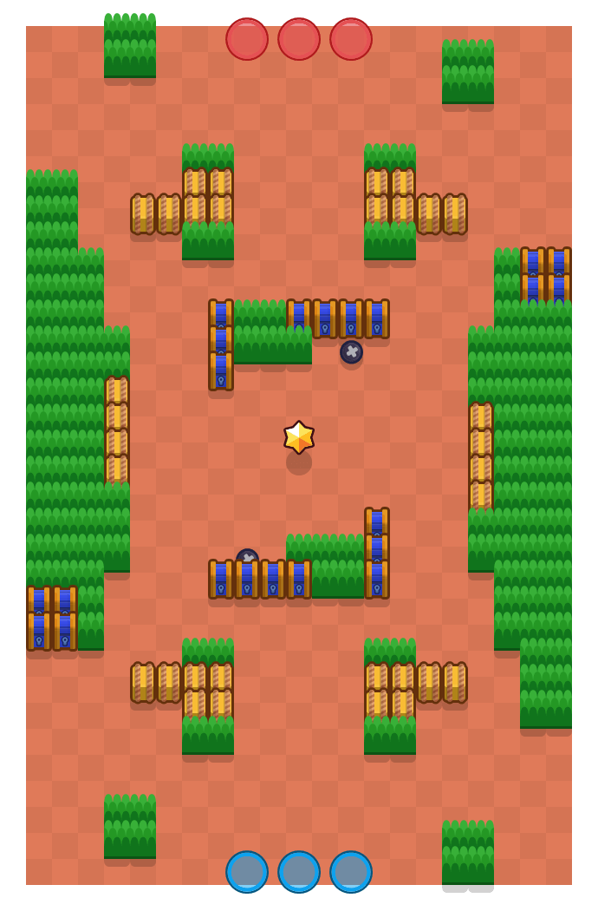

사원의 폐허(Temple Ruins)

게임 모드
현재 상태
삭제
제작자
슈퍼셀
존재 기간
2017년 6월 15일 ~ 2019년 8월 29일
마지막 경쟁전 등장
2019년 8월 19일
바운티 원년 맵들 중 오래 살아남은 맵 중 하나로, 젬 그랩의 "흔들 광산"과 유사한 구조를 띄고 있다. 다만 완전히 똑같은 구조는 아니다. "흔들 광산"은 덤불 양 끝이 막혀있는 반면 이 맵은 뚫려있다. 전체적으로 흔들 광산보다 개활지 느낌이 강하다. 2019년 8월 29일 8비트 업데이트 때 삭제된 후 돌아오지 못하고 있다.